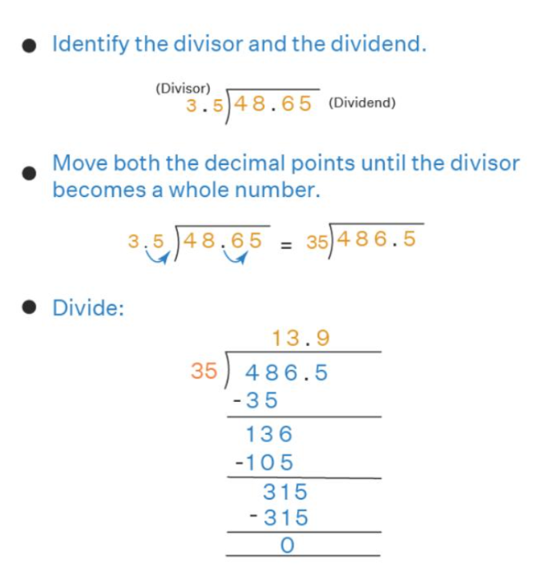

Today we are going to learn about:
Dividing Decimals is similar to dividing whole numbers, keeping in mind the position of the decimal point. While dividing decimal numbers, we need to follow a certain set of rules but the basic division process remains the same.
How to Divide Decimals ?
The process of dividing decimals is similar to the normal division process, but we need to remember the decimal point which should be correctly placed in the quotient. A decimal number has a whole number part and a fractional part separated by a dot which is the decimal point. The digits after the decimal point have a value smaller than 1. For example, 24.15 is a decimal number in which 24 is the whole number part and 15 is the fractional part. For dividing decimal numbers, we can come across 2 scenarios - one in which we need to divide decimals by a whole number, and the other in which we divide decimals by decimals.
Dividing Decimals with Whole Numbers
Dividing decimals by whole numbers is similar to normal division. Here, the dividend is a decimal number and the divisor is a whole number, so the decimal point in the quotient will be placed according to the decimal point of the dividend. We can understand this with the help of the long division of decimals.
Long Division of Decimals
Example: Divide 338.56 ÷ 23
Solution:
- Step 1: First, write the division in the standard form. Start by dividing the whole number part by the divisor.
- Step 2: Place the decimal point in the quotient above the decimal point of the dividend. Bring down the tenth digit.
- Alternate Exterior Angles
- Step 3: Divide and bring down the other digit in sequence. Divide until 0 is obtained in the remainder. Thus, the decimal in the quotient is placed according to the decimal in the dividend.
Dividing Decimals by Decimals
For dividing decimals by another decimal, we need to convert the divisor into a whole number and then continue the division. Let us understand the conditions and rules for this method using an example.
Example: Divide 48.65 ÷ 3.5
Solution: In this division, the dividend and the divisor are decimals, so we need to convert the divisor to a whole number using the following steps.

- Step 1: The dividend is 48.65 and the divisor is 3.5. We need to change the divisor to a whole number and so we will multiply it by 10 so that the decimal point shifts to the right and it becomes a whole number. This means, 3.5 × 10 = 35.
- Step 2: We need to treat the dividend in the same way as we had treated the divisor. So, we will multiply the dividend by 10 as well. This means it will be 48.65 × 10 = 486.5. In other words, we need to move both the decimal points to the right until the divisor becomes a whole number.
- Step 3: Now, we have 486.5 as the dividend and 35 as the divisor. This can be divided as we do the usual division and we get 13.9 as the quotient.
Important Tips on Dividing Decimals
Now, let us look at the following tips that are helpful while dividing decimals.
- Convert the divisor to a whole number by multiplying by the powers of 10. Multiply the dividend by the same powers of 10.
- To divide a decimal number by 10, move the decimal point to the left by one place. For example, if we need to divide 45.67 ÷ 10, then it can be easily done by shifting the decimal point to the left and the answer will be 4.567
- To divide a decimal number by 100, move the decimal point to the left by two places. For example, if we need to divide 324.6 ÷ 100, then it can be easily done by shifting the decimal point to the left and the answer will be 3.246
- To divide a decimal number by 1000, move the decimal point to the left by three places. For example, if we need to divide 8934.5 ÷ 1000, then it can be easily done by shifting the decimal point to the left and the answer will be 8.9345